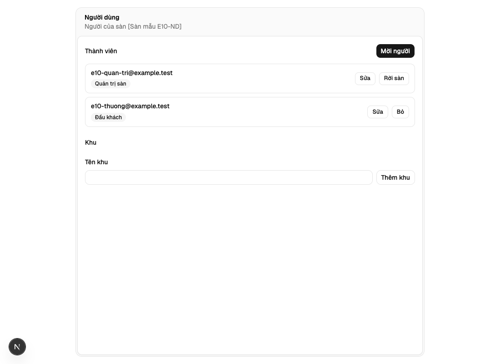
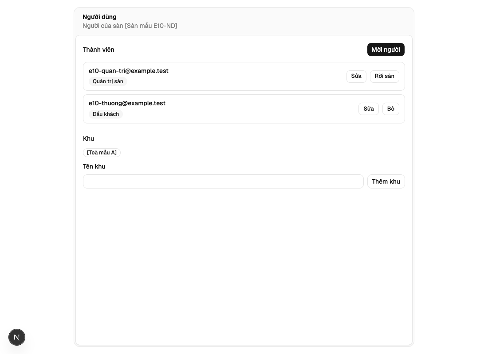
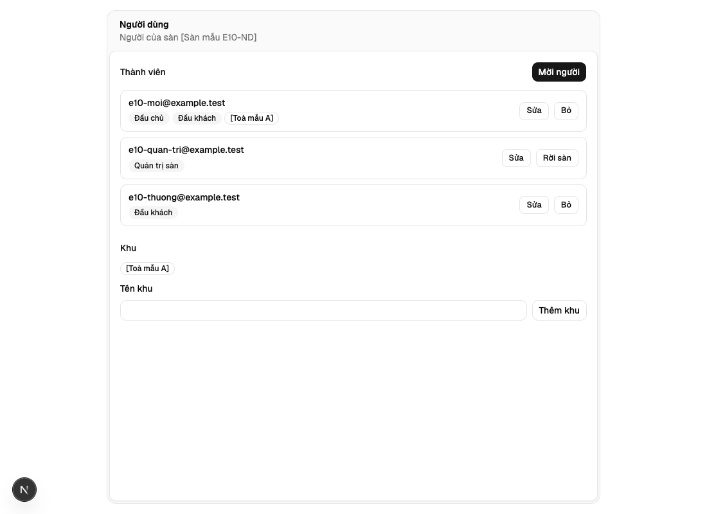
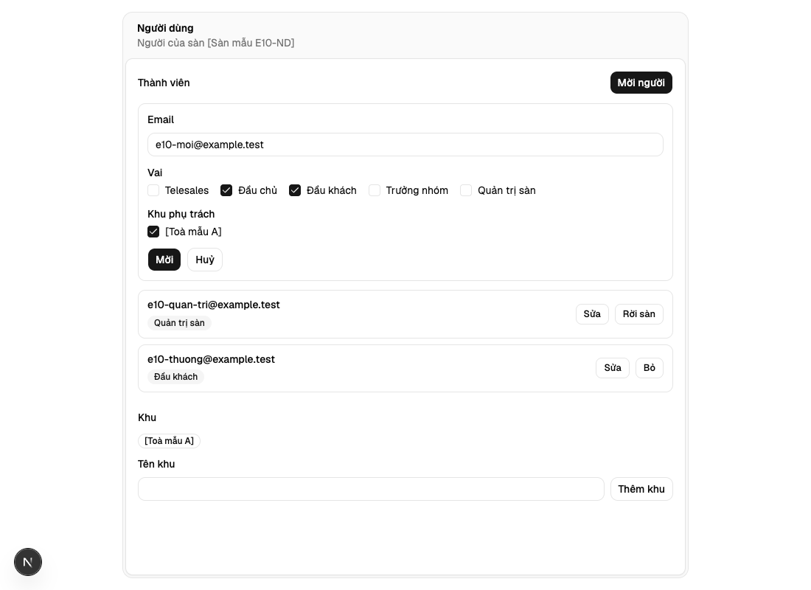
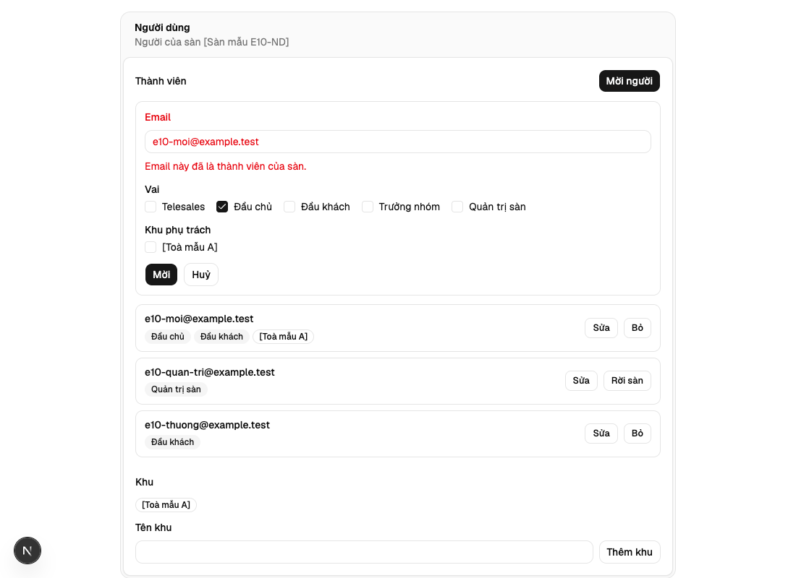
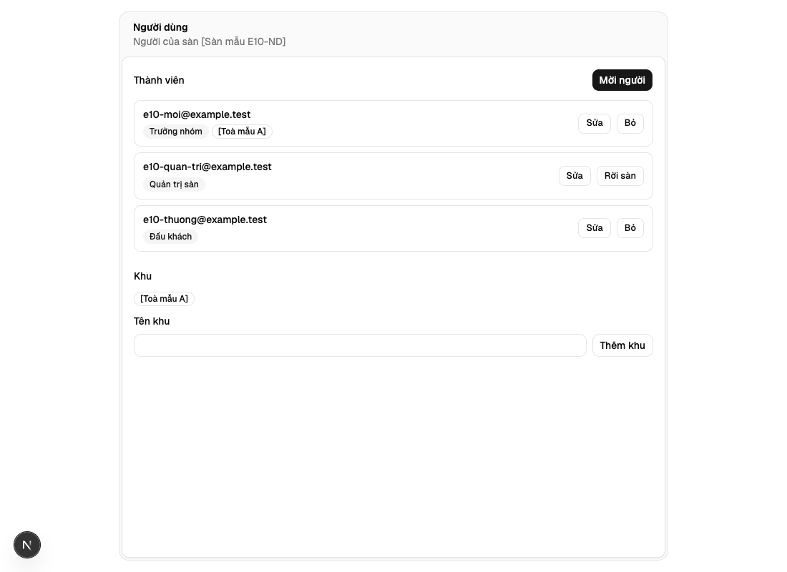
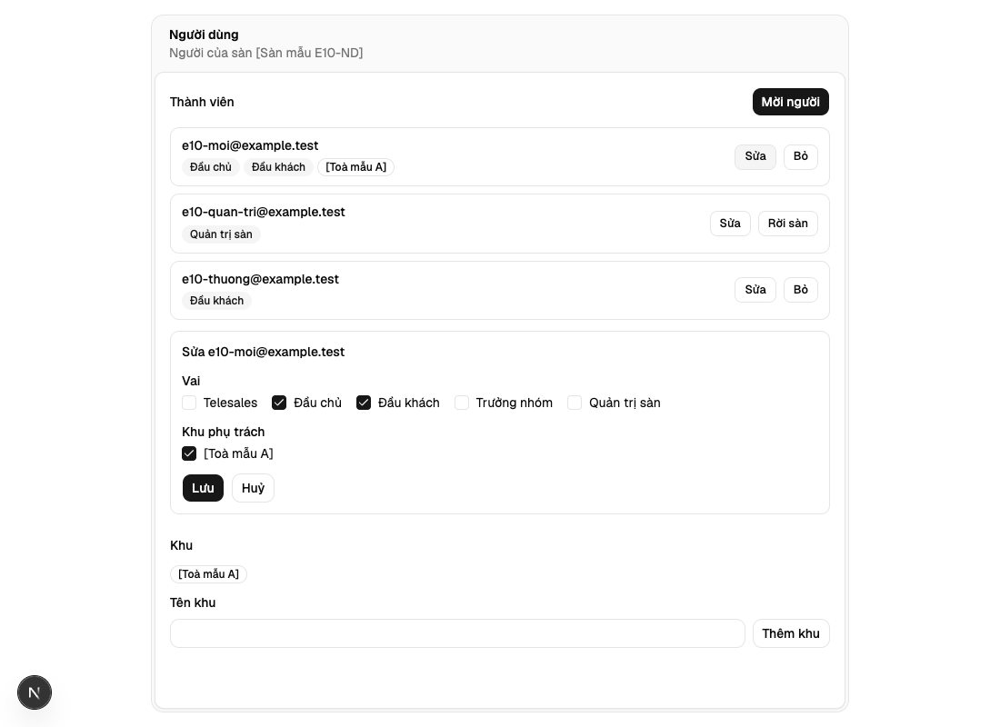
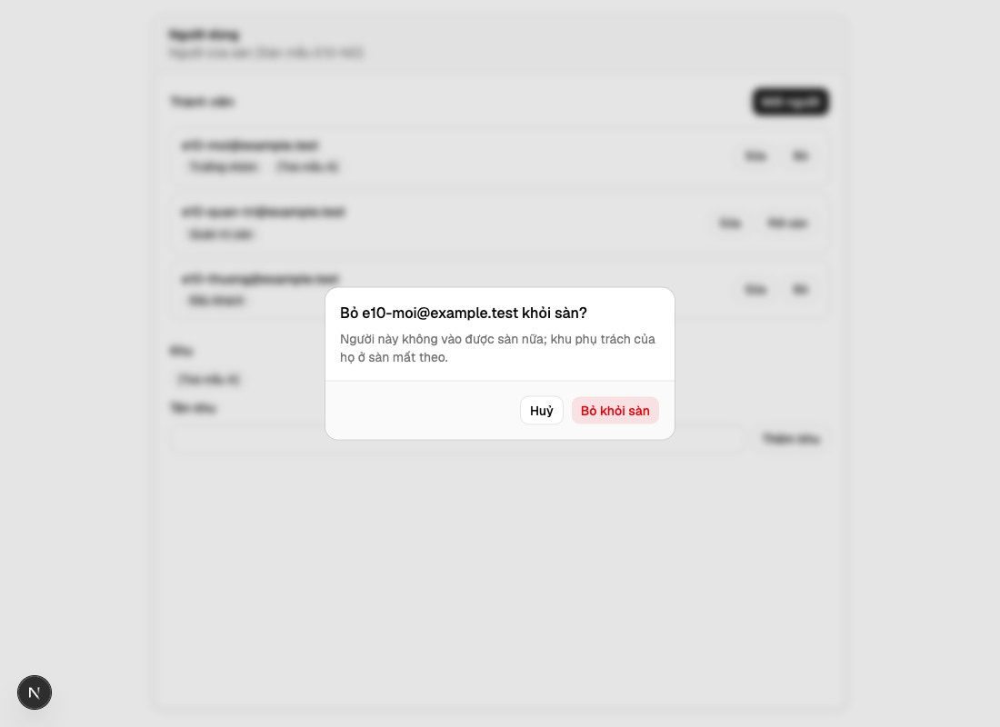
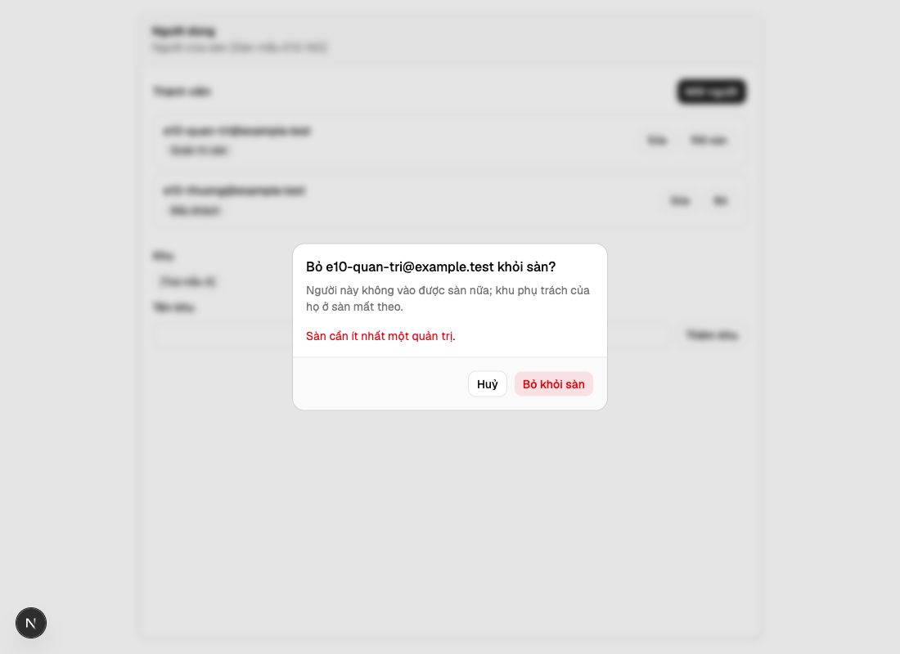
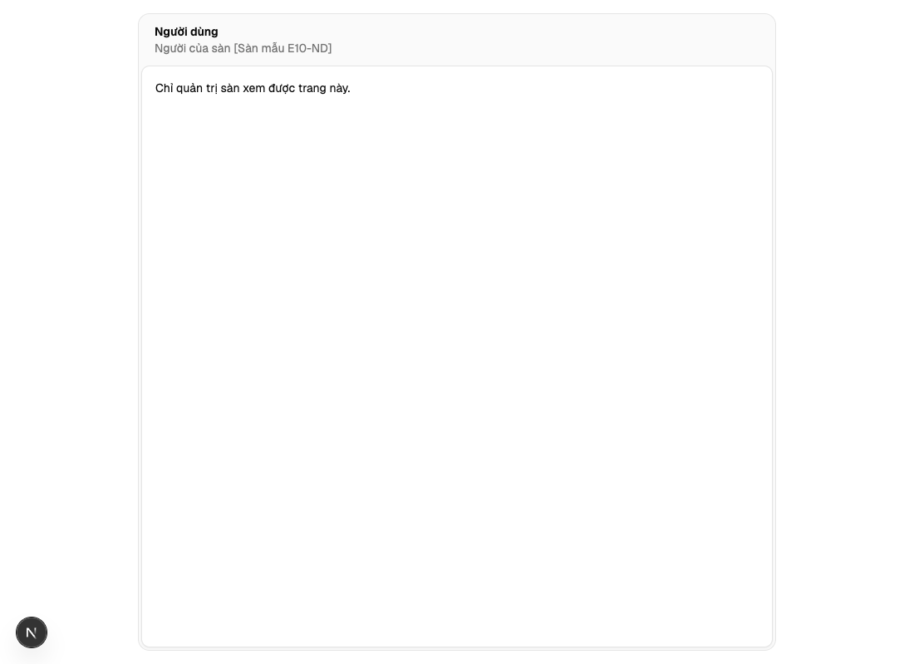

Quản trị sàn mời người vào sàn, đặt vai và khu phụ trách; một người giữ được nhiều vai
Vì sao làm
Màn S6 · Người dùng; tách khỏi đăng nhập vì là lớp quyền
Đã hứa
- AC-1 — Given quản trị sàn A, When mời một email chưa có tài khoản với vai đầu chủ và đầu khách, Then người đó xin mã,
- AC-2 — Given một người đã có tài khoản và đang thuộc sàn B, When quản trị sàn A mời đúng email ấy, Then người đó thuộc
- AC-3 — Given quản trị sàn A, When đặt vai cho một thành viên, Then chỉ năm giá trị telesales, đầu chủ, đầu khách,
- AC-4 — Given quản trị sàn A, When tạo khu theo tên và giao khu cho thành viên, Then thành viên mang đúng các khu ấy;
- AC-5 — Given quản trị sàn A, When bỏ một thành viên khỏi sàn, Then lời gọi kế của người đó — kể cả dùng lại phiên và
- AC-6 — Given người thuộc sàn A mà không có vai quản trị, When gọi danh sách, mời, sửa, bỏ thành viên hay tạo khu, Then
- AC-7 — Given sàn A chỉ còn một quản trị, When bỏ người đó khỏi sàn hay gỡ vai quản trị của họ, Then bị từ chối với
- AC-8 — Given cơ sở dữ liệu đã áp mọi migration, When chạy bộ kiểm cách ly, Then bảng khu và khu phụ trách bật và ép
- AC-9 — Given công cụ vận hành mở sàn, When mở sàn mới với một email, Then người đó là thành viên mang vai quản trị
- AC-10 — Given dev server với một quản trị và một người không phải quản trị, When quản trị mở trang Người dùng — xem
Thiết kế
docs/superpowers/specs/2026-10-30-moi-nguoi-vai-khu-design.md
Quyết định
- 2026-10-30 · Máy · approach · S1 — Đã tra tri thức: Quản trị sàn mời người vào sàn, đặt vai và khu phụ trách; một người giữ được nhiều vaiKho đã khai tri_thuc — bước thiết kế tra trang trước khi chọn.
- 2026-10-30 · Máy · approach · S1 — Mời là vào sàn ngay, không có bước chấp nhận lời mời (nháp theo khuyến nghị, chờ chủ kho chốt)Chưa có email thật nên lời mời chờ nhận không tới được tay người được mời; quản trị tự báo qua kênh của mình.
- 2026-10-30 · Máy · approach · S1 — Khu là tên do sàn tự đặt trong bảng khu của sàn, gắn vào toà danh mục ở hàng nạp danh mục (nháp theo khuyến nghị, chờ chủ kho chốt)Danh mục toà chưa có trong cơ sở dữ liệu; ghi chép 28/10 nói mỗi toà hay phân khu một người phụ trách.
- 2026-10-30 · Máy · approach · S1 — Chỉ quản trị sàn xem được danh sách người của sàn ở hàng này; trưởng nhóm xem người của nhóm ở màn Đội (nháp theo khuyến nghị, chờ chủ kho chốt)Tham chiếu §9 đặt Cài đặt sàn chỉ cho quản trị và Đội cho trưởng nhóm; chưa ai đòi cho mọi thành viên xem.
- 2026-10-30 · Máy · approach · S1 — Vai lưu thành mảng trên thành viên với đúng năm giá trị chuẩn, không cho sàn tự thêm vaiTham chiếu §2 chốt một bộ năm vai và «một người giữ được nhiều vai».
- 2026-10-30 · Máy · approach · S1 — Sàn luôn còn ít nhất một quản trị, chặn bằng trigger ở cơ sở dữ liệuKhông còn quản trị thì không ai mời hay sửa người được nữa, chỉ đội vận hành gỡ được; chặn ở màn thì một đường ghi khác lách được.
- 2026-10-30 · Máy · approach · S1 — Màn Người dùng ghép từ thành phần đã cài (Frame, Item, Field, Checkbox, AlertDialog), không dùng khối Pro solution-users-8Khối đích solution-users-8 là khối Pro, cần khoá giấy phép trong .env.local mà kho chưa cài khối Pro nào (catalog hàng 4).
- 2026-10-30 · Máy · descope · S1 — bỏ đường-đo — ô cơ hội chưa khai ngưỡng (bốn dòng «…»)_acceptance/moi-nguoi-vai-khu/opportunity.md mục ngưỡng còn trống.
- 2026-10-30 · Máy · descope · S1 — bỏ design-pass — màn ghép từ thành phần chuẩn đã cài, không có khối mới để duyệt thẩm mỹ; bảng trạng thái ở bản thiết kế, khung chụp ở E10Nghi thức S1-D duyệt thẩm mỹ khối mới; màn này chỉ dùng thành phần hàng 4 đã duyệt.
- 2026-10-30 · Máy · approach · S1 — Quản trị sàn được tạo tài khoản cho email mới và gắn người đang ở sàn khác khi mời; câu trả lời như nhau dù email đã có tài khoản hay chưa (nháp theo khuyến nghị, chờ chủ kho chốt)Phản biện chỉ ra lựa chọn này là chính sách ai được vào, mở lại cửa mà hàng 6 đóng; hàng 6 tắt tự đăng ký nên mời là đường duy nhất để người mới có tài khoản.
- 2026-10-30 · Máy · approach · S1 — Màn Người dùng ghép từ thành phần đã cài ở hàng này; dùng khối Pro solution-users-8 khi chủ kho thêm khoá ReUI (nháp theo khuyến nghị, chờ chủ kho chốt)Phản biện chỉ ra lối dùng khối Pro không chết: chủ kho thêm khoá vào .env.local được trong một bước.
- 2026-10-30 · Máy · descope · S1 — bỏ design-pass — theo khuyến nghị Hỏi-5 màn chỉ ghép thành phần hàng 4 đã duyệt; chủ kho chọn khối Pro thì giữ bước duyệt giao diệnNghi thức S1-D duyệt thẩm mỹ khối mới; lối ghép không thêm khối mới nào.
- 2026-10-30 · Người · seal · gate1 —
- 2026-10-30 · Người (Manh Phan) · approach · gate1 — Kế hoạch năm việc được duyệt (Gate 1.5)người chọn ở lần duyệt kế hoạch: kế hoạch moi-nguoi-vai-khu: duyệt
- 2026-10-30 · Máy · fix · S4-r1 — Khi sửa một người, ghi khu phụ trách trước rồi mới đổi vai, để quản trị tự gỡ vai quản trị của mình vẫn lưu đúng các khu đã chọnHội đồng r1 (t4, AC-4) chỉ ra luật ghi member_zones hỏi quyền quản trị trong cùng giao dịch; hai ca mới ở packages/api/test-db/members.test.ts đỏ trên mã cũ (403 · khu cũ còn) và xanh sau khi đổi thứ tự
Bằng chứng
Các eval
| Eval | Tiêu chí | Loại | Verdict | run_id | verified_at |
|---|---|---|---|---|---|
| E1 | AC-1 | test | PASS | minted-moi-nguoi-vai-khu-E1-r2 | 2026-10-30T15:10:05Z |
| E2 | AC-2 | test | PASS | minted-moi-nguoi-vai-khu-E2-r2 | 2026-10-30T15:10:05Z |
| E3 | AC-3 | test | PASS | minted-moi-nguoi-vai-khu-E3-r2 | 2026-10-30T15:10:05Z |
| E4 | AC-4 | test | PASS | minted-moi-nguoi-vai-khu-E4-r2 | 2026-10-30T15:10:05Z |
| E5 | AC-5 | test | PASS | minted-moi-nguoi-vai-khu-E5-r2 | 2026-10-30T15:10:05Z |
| E6 | AC-6 | test | PASS | minted-moi-nguoi-vai-khu-E6-r2 | 2026-10-30T15:10:05Z |
| E7 | AC-7 | test | PASS | minted-moi-nguoi-vai-khu-E7-r2 | 2026-10-30T15:10:05Z |
| E8 | AC-8 | test | PASS | minted-moi-nguoi-vai-khu-E8-r1 | 2026-10-30T11:13:03Z |
| E9 | AC-9 | test | PASS | minted-moi-nguoi-vai-khu-E9-r1 | 2026-10-30T11:13:03Z |
| E10 | AC-10 | ui-check | PASS | minted-moi-nguoi-vai-khu-E10-r2 | 2026-10-30T15:10:05Z |
| E11 | AC-10 | test | PASS | minted-moi-nguoi-vai-khu-E11-r2 | 2026-10-30T15:10:05Z |
Chi tiết từng eval
PASS E1 · test
AC-1: Given quản trị sàn A, When mời một email chưa có tài khoản với vai đầu chủ và đầu khách, Then người đó xin mã,
npm run db:migrate && npm run db:test ℹ duration_ms 1015.901416
PASS E2 · test
AC-2: Given một người đã có tài khoản và đang thuộc sàn B, When quản trị sàn A mời đúng email ấy, Then người đó thuộc
npm run db:migrate && npm run db:test ℹ duration_ms 1015.901416
PASS E3 · test
AC-3: Given quản trị sàn A, When đặt vai cho một thành viên, Then chỉ năm giá trị telesales, đầu chủ, đầu khách,
npm run db:migrate && npm run db:test ℹ duration_ms 1015.901416
PASS E4 · test
AC-4: Given quản trị sàn A, When tạo khu theo tên và giao khu cho thành viên, Then thành viên mang đúng các khu ấy;
npm run db:migrate && npm run db:test ℹ duration_ms 1015.901416
PASS E5 · test
AC-5: Given quản trị sàn A, When bỏ một thành viên khỏi sàn, Then lời gọi kế của người đó — kể cả dùng lại phiên và
npm run db:migrate && npm run db:test ℹ duration_ms 1015.901416
PASS E6 · test
AC-6: Given người thuộc sàn A mà không có vai quản trị, When gọi danh sách, mời, sửa, bỏ thành viên hay tạo khu, Then
npm run db:migrate && npm run db:test ℹ duration_ms 1015.901416
PASS E7 · test
AC-7: Given sàn A chỉ còn một quản trị, When bỏ người đó khỏi sàn hay gỡ vai quản trị của họ, Then bị từ chối với
npm run db:migrate && npm run db:test ℹ duration_ms 1015.901416
PASS E8 · test
AC-8: Given cơ sở dữ liệu đã áp mọi migration, When chạy bộ kiểm cách ly, Then bảng khu và khu phụ trách bật và ép
carry-forward tu round 1 — delta khong cham paths cua eval
PASS E9 · test
AC-9: Given công cụ vận hành mở sàn, When mở sàn mới với một email, Then người đó là thành viên mang vai quản trị
carry-forward tu round 1 — delta khong cham paths cua eval
PASS E10 · ui-check
AC-10: Given dev server với một quản trị và một người không phải quản trị, When quản trị mở trang Người dùng — xem











PASS E11 · test
AC-10: Given dev server với một quản trị và một người không phải quản trị, When quản trị mở trang Người dùng — xem
npm run db:migrate && npm run db:test ℹ duration_ms 1015.901416
Eval không phân biệt (Analyst)
Vòng verify
- Round 1: moi eval xanh; mot finding trong hop dong (AC-4) ve quan tri tu go vai khong luu dung khu.
- Round 2: sua o commit 68f621b (quan tri tu go vai van luu dung khu phu trach); E1-E7, E10, E11 chay lai xanh; E8 va E9 mang tu round 1.
Tài nguyên
| Khối | Tác tử | Token đầu ra |
|---|---|---|
| S4 round 1 | 17 | 54.887 |
| S4 round 2 | 16 | 37.794 |
2 lượt chấm · tổng 92.681 token
Giới hạn và ngoài hợp đồng
- Gửi email mời — chưa có email thật (hàng nơi chạy); quản trị tự báo người được mời.
- Quyền chi tiết của từng vai ở từng màn — làm cùng màn đó; hàng này chỉ chặn quyền quản trị người.
- Lịch sử ai sửa gì — theo sự kiện của hàng 8.
- Gắn khu vào toà / phân khu của danh mục — hàng nạp danh mục.
- Màn Đội của trưởng nhóm, nhãn riêng của người.
- Khối Pro `solution-users-8` — màn ghép từ thành phần đã cài (theo Hỏi-5).
Giao
chưa ghi quan sát production
Giá trị
- Câu hỏi phép đo trả lời: … — chưa đo
- Kết quả nào là SỐNG: … — chưa đo
- Kết quả nào là CHẾT: … — chưa đo
- Timebox: … — chưa đo